Matplotlib绘图库
绘图基础
- Matplotlib 库太大，画图通常仅仅使用其中的核心模块 matplotlib.pyplot，并给其一个别名 plt，即
import matplotlib.pyplot as plt。 - 为了使图形在展示时能很好的嵌入到 Jupyter 的 Out[ ] 中，需要使用
%matplotlib inline。
%matplotlib inline 的作用，这个"魔法命令"告诉 Jupyter：
- 使用 inline 后端（inline backend）
- 图形会自动嵌入在 notebook 中显示
- 不需要显式调用 plt.show()
绘制图像
展示一个很简单的图形绘制示例。
import matplotlib.pyplot as plt
%matplotlib inline
# 绘制图像
Fig1 = plt.figure() # 创建新图窗
x = [ 1, 2, 3, 4, 5 ] # 数据的 x 值
y = [ 1, 8, 27, 64, 125 ] # 数据的 y 值
plt.plot(x,y) # plot 函数：先描点，再连线
[<matplotlib.lines.Line2D at 0x7e276d31ae40>]
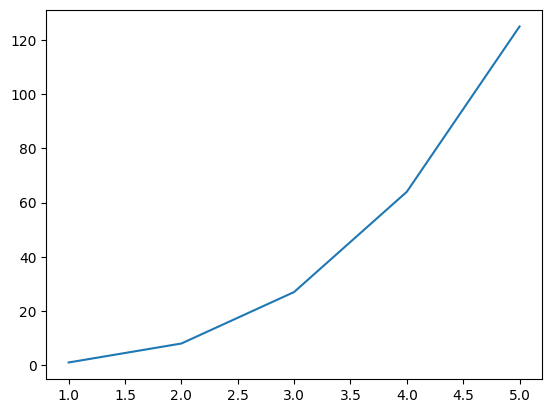
这里绘制虽然很完美，但遗憾的是图形太浑浊，虽然瑕不掩疵，但无法入眼。
因此，需要在 Jupyter 中展示高清的 svg 矢量图。
# 展示高清图
from matplotlib_inline import backend_inline
backend_inline.set_matplotlib_formats('svg')
# 绘制图像
Fig2 = plt.figure() # 创建新图窗
x = [ 1, 2, 3, 4, 5 ] # 数据的 x 值
y = [ 1, 8, 27, 64, 125 ] # 数据的 y 值
plt.plot(x,y) # 使用 plot 函数绘制线型图
[<matplotlib.lines.Line2D at 0x7e2766079be0>]
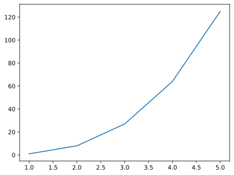
保存图像
保存图形用.savefig( )方法，其需要一个 r 字符串：r'绝对路径\图形名.后缀'。 - 绝对路径：如果要保存到桌面，绝对路径即：C:\Users\用户名\Desktop； - 后缀：可保存图形的格式很多，包括：eps、jpg、pdf、png、ps、svg 等。为了保存清晰的图，推荐保存至 svg 矢量格式。
例如：Fig2.savefig(r'C:\Users\zjj\Desktop\我的图.svg')
两种画图方式
Matplotlib 中有两种画图方式：Matlab 方式和面向对象方式。
这两种方式都可以完成同一个目的，也可以相互转化。
import matplotlib.pyplot as plt
%matplotlib inline
# 展示高清图
from matplotlib_inline import backend_inline
backend_inline.set_matplotlib_formats('svg')
# 准备数据
x = [ 1, 2, 3, 4, 5 ] # 数据的 x 值
y = [ 1, 8, 27, 64, 125 ] # 数据的 y 值
# Matlab 方式
Fig1 = plt.figure()
plt.plot(x,y)
[<matplotlib.lines.Line2D at 0x7e2763e3a840>]
# 面向对象方式
Fig2 = plt.figure() # 创建 Figure 对象
ax2 = plt.axes() # 创建 Axes 对象
ax2.plot(x,y) # 明确指定在哪个 axes 上绘图
[<matplotlib.lines.Line2D at 0x7e2763ce36b0>]
注意：
- Matlab方式通过plt.plot()隐式操作当前图形，代码简洁适合快速绘图；面向对象方式通过ax.plot()显式操作Axes对象，结构清晰适合复杂图表和精确控制。
- 在面向对象方式中，Fig2 的作用是创建一个图形对象（Figure 对象），它是 matplotlib 中最高级别的容器。
图窗与坐标轴
- 图形窗口（figure）在 Matlab 中会单独弹出，该窗口中可容纳元素，也可以是空的窗口。在 Jupyter 中，由于我们将图形嵌入到了 Out [ ]中，所以不会看到有 figure 弹出。虽然看不到窗口，但在画图之前，仍然要手动 Fig1 = plt.figure()创建图窗，毕竟保存图形的.savefig( )方法是需要图形名，且后面几章会更加强调。
- 坐标轴（axes）是一个矩形，其下方是 x 轴的数值与刻度，左侧是 y 轴的数值与刻度。因此，将 1.4 示例中的蓝色曲线删除，剩余部分全是 axes。
多图形的绘制
在 Jupyter 的某个代码块中使用Fig1=plt.figure()创建图窗后，其范围仅仅在此代码块中，跳出此代码块外的其他画图命令将与Fig1无关。
因此，画一幅图，请在一个代码块中完成，不得分块。
绘制多线条
在同一个图窗内绘制多线条，按两种画图方式分开来演示。
import matplotlib.pyplot as plt
%matplotlib inline
# 展示高清图
from matplotlib_inline import backend_inline
backend_inline.set_matplotlib_formats('svg')
# 准备数据
x = [ 1, 2, 3, 4, 5 ] # 数据的 x 值
y1 = [ 1, 2, 3, 4, 5 ] # 数据的 y1 值
y2 = [ 0, 0, 0, 0, 0 ] # 数据的 y2 值
y3 = [ -1, -2, -3, -4, -5 ] # 数据的 y3 值
# Matlab 方式
Fig1 = plt.figure()
plt.plot(x,y1)
plt.plot(x,y2)
plt.plot(x,y3)
[<matplotlib.lines.Line2D at 0x7b32e98bfe60>]
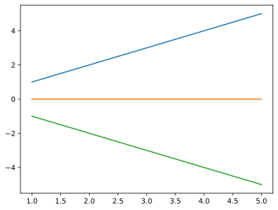
# 面向对象方式
Fig2 = plt.figure()
ax2 = plt.axes()
ax2.plot(x,y1)
ax2.plot(x,y2)
ax2.plot(x,y3)
[<matplotlib.lines.Line2D at 0x7b32e9954200>]
绘制多子图
绘制多个子图时，两种方法可能区别较大。
import matplotlib.pyplot as plt
%matplotlib inline
# 展示高清图
from matplotlib_inline import backend_inline
backend_inline.set_matplotlib_formats('svg')
# Matlab 方式
Fig1 = plt.figure()
plt.subplot(3,1,1), plt.plot(x,y1)
plt.subplot(3,1,2), plt.plot(x,y2)
plt.subplot(3,1,3), plt.plot(x,y3)
(<Axes: >, [<matplotlib.lines.Line2D at 0x7b32e9899370>])
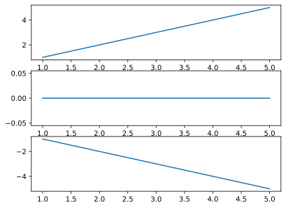
在 plt.subplot(3,1,1) 中，三个参数的含义如下： - 第一个参数 3：行数（nrows） - 表示将整个画布垂直划分为 3 行 - 第二个参数 1：列数（ncols） - 表示将画布水平划分为 1 列 - 第三个参数 1：索引（index） - 表示选择第 1 个子图区域进行绘制 - 子图编号从左上角开始，逐行逐列编号，从 1 开始计数
# 面向对象方式
Fig2, ax2 = plt.subplots(3)
ax2[0].plot(x,y1)
ax2[1].plot(x,y2)
ax2[2].plot(x,y3)
[<matplotlib.lines.Line2D at 0x7b32e95838c0>]
在上述示例中，注意到用 Fig2, ax2 = plt.subplots(3)一行代码替代了之前的两行代码 Fig2 = plt.figure()与 ax2 = plt.axes()。
因此，之后可以直接使用 Fig2, ax2 = plt.subplots()简化面向对象方式的代码。
图表类型
图表类型
plt 提供 5 类基本图表，分别是二维图、网格图、统计图、轮廓图、三维图。详见https://matplotlib.org/stable/plot_types/index，以下罗列深度学习中可能用的。
二维图
二维图，只需要两个向量即可绘图，其中线型图可以替代其他所有二维图。
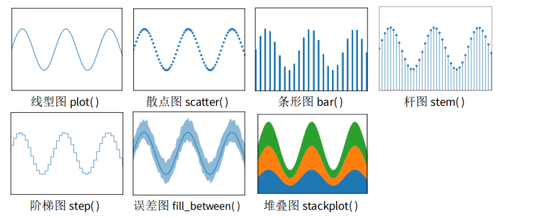
网格图
网格图，只需要一个矩阵即可绘图，以下网格图都有一定的实用价值。
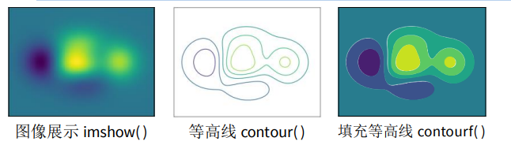
统计图
统计图，一般做数据分析时使用。
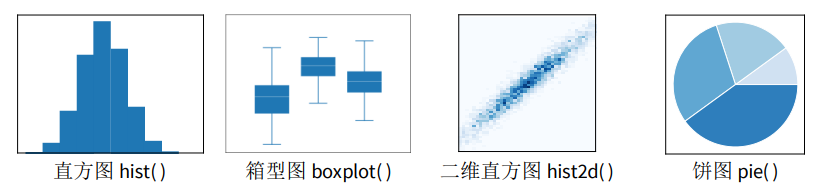
以上图形只会挑选其中最关键、使用最频繁的函数进行讲解。其它情况可百度或者去官网查看使用方法。
除了上述链接中的这五类基本图表外，还有更多作者提前画好的花哨的靓图，详见 https://matplotlib.org/stable/gallery/index.html。
最后，作者还温馨地向小白的我们提供了从 0 开始到大神的完整教程，详见：https://matplotlib.org/stable/tutorials/index.html。
二维图
二维图，仅仅演示plot线型图函数，只因其可以替代其他所有二维图。
设置颜色
plot()函数含 color 参数，可以设置线条的颜色，如示例所示，颜色可以使用十六进制。
# 展示高清图
from matplotlib_inline import backend_inline
backend_inline.set_matplotlib_formats('svg')
# 准备数据
x = [ 1, 2, 3, 4, 5 ] # 数据的 x 值
y1 = [ 0, 1, 2, 3, 4 ] # 数据的 y1 值
y2 = [ 1, 2, 3, 4, 5 ] # 数据的 y2 值
y3 = [ 2, 3, 4, 5, 6 ] # 数据的 y3 值
y4 = [ 3, 4, 5, 6, 7 ] # 数据的 y4 值
y5 = [ 4, 5, 6, 7, 8 ] # 数据的 y5 值
# Matlab 方式
Fig1 = plt.figure()
plt.plot(x, y1, color='#7CB5EC')
plt.plot(x, y2, color='#F7A35C')
plt.plot(x, y3, color='#A2A2D0')
plt.plot(x, y4, color='#F6675D')
plt.plot(x, y5, color='#47ADC7')
[<matplotlib.lines.Line2D at 0x7b32e965e2a0>]
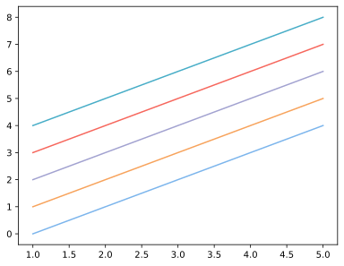
# 面向对象方式
Fig2, ax2 = plt.subplots()
ax2.plot(x, y1, color='#7CB5EC')
ax2.plot(x, y2, color='#F7A35C')
ax2.plot(x, y3, color='#A2A2D0')
ax2.plot(x, y4, color='#F6675D')
ax2.plot(x, y5, color='#47ADC7')
[<matplotlib.lines.Line2D at 0x7b32e9510740>]
设置风格
plot()函数含 linestyle 参数，可以设置线条的风格，如示例所示。
在设置线条风格时，'-'表示实线，'--'表示虚线，'-.'表示点虚线，':'表示点线，''表示隐藏该线条。
# Matlab 方式
Fig1 = plt.figure()
plt.plot(x, y1, linestyle='-')
plt.plot(x, y2, linestyle='--')
plt.plot(x, y3, linestyle='-.')
plt.plot(x, y4, linestyle=':')
plt.plot(x, y5, linestyle=' ')
[<matplotlib.lines.Line2D at 0x7b32e9383020>]
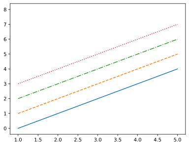
# 面向对象方式
Fig2, ax2 = plt.subplots()
ax2.plot(x, y1, linestyle='-')
ax2.plot(x, y2, linestyle='--')
ax2.plot(x, y3, linestyle='-.')
ax2.plot(x, y4, linestyle=':')
ax2.plot(x, y5, linestyle=' ')
[<matplotlib.lines.Line2D at 0x7b32e9421580>]
设置粗细
plot()函数含linewidth参数，可以设置线条的粗细。
在设置线条粗细时，数字表示磅数，一般以0.5至3为宜。
# Matlab 方式
Fig1 = plt.figure()
plt.plot(x, y1, linewidth=0.5)
plt.plot(x, y2, linewidth=1)
plt.plot(x, y3, linewidth=1.5)
plt.plot(x, y4, linewidth=2)
[<matplotlib.lines.Line2D at 0x7b32e931b500>]
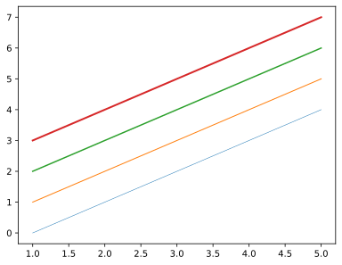
# 面向对象方式
Fig2, ax2 = plt.subplots()
ax2.plot(x, y1, linewidth=0.5)
ax2.plot(x, y2, linewidth=1)
ax2.plot(x, y3, linewidth=1.5)
ax2.plot(x, y4, linewidth=2)
[<matplotlib.lines.Line2D at 0x7b32e91aa7b0>]
设置标记
plot()函数含marker函数，可以设置线条的标记。
标记的尺寸可以由markersize参数调整，其值以3至9为宜。
# Matlab 方式
Fig1 = plt.figure()
plt.plot(x, y1, marker='.')
plt.plot(x, y2, marker='o')
plt.plot(x, y3, marker='^')
plt.plot(x, y4, marker='s')
plt.plot(x, y5, marker='D', markersize=5)
[<matplotlib.lines.Line2D at 0x7b32e8eed9d0>]
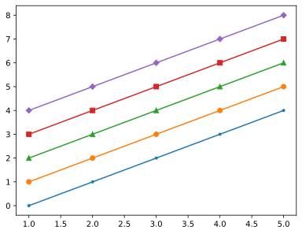
# 面向对象方式
Fig2, ax2 = plt.subplots()
ax2.plot(x, y1, marker='.')
ax2.plot(x, y2, marker='o')
ax2.plot(x, y3, marker='^')
ax2.plot(x, y4, marker='s')
ax2.plot(x, y5, marker='D')
[<matplotlib.lines.Line2D at 0x7b32e8d88080>]
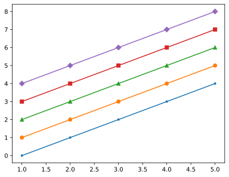
综合应用
现在综合上述所有的线条属性，绘制图形。
# Matlab 方式
Fig1 = plt.figure()
plt.plot(x, y1, color='#7CB5EC', linestyle='-', linewidth=2, marker='o', markersize=6)
plt.plot(x, y2, color='#F7A35C', linestyle='--', linewidth=2, marker='^', markersize=6)
plt.plot(x, y3, color='#A2A2D0', linestyle='-.', linewidth=2, marker='s', markersize=6)
plt.plot(x, y4, color='#F6675D', linestyle=':', linewidth=2, marker='D', markersize=6)
plt.plot(x, y5, color='#47ADC7', linestyle=' ', linewidth=2, marker='o', markersize=6)
[<matplotlib.lines.Line2D at 0x7b32e8dfe1b0>]
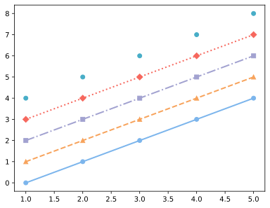
# 面向对象方式
Fig2, ax2 = plt.subplots()
ax2.plot(x, y1, color='#7CB5EC', linestyle='-', linewidth=2, marker='o', markersize=6)
ax2.plot(x, y2, color='#F7A35C', linestyle='--', linewidth=2, marker='^', markersize=6)
ax2.plot(x, y3, color='#A2A2D0', linestyle='-.', linewidth=2, marker='s', markersize=6)
ax2.plot(x, y4, color='#F6675D', linestyle=':', linewidth=2, marker='D', markersize=6)
ax2.plot(x, y5, color='#47ADC7', linestyle=' ', linewidth=2, marker='o', markersize=6)
[<matplotlib.lines.Line2D at 0x7b32e8c99250>]
请留意 y5 的线条，此时为散点，这种方式画散点图比 plt.scatter( )效率更高。
网格图
网格图，仅演示imshow函数，只因另外两个在深度学习中几乎使用不到。
import matplotlib.pyplot as plt
%matplotlib inline
# 展示高清图
from matplotlib_inline import backend_inline
backend_inline.set_matplotlib_formats('svg')
# 准备数据
import numpy as np
x = np.linspace(0,10,1000)
I = np.sin(x) * np.cos(x).reshape(-1,1)
# Matlab 方式
Fig1 = plt.figure()
plt.imshow(I)
<matplotlib.image.AxesImage at 0x7b32e9422120>
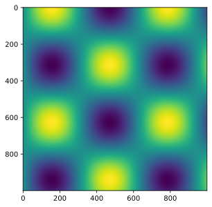
# 面向对象方式
Fig2, ax2 = plt.subplots()
ax2.imshow(I)
<matplotlib.image.AxesImage at 0x7b32e8cb2cf0>
在所有的网格图中，还可以配置颜色条。
# Matlab 方式
Fig1 = plt.figure()
plt.imshow(I)
plt.colorbar()
<matplotlib.colorbar.Colorbar at 0x7b32e7c73710>
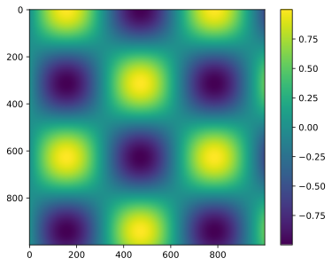
# 面向对象方式
Fig2, ax2 = plt.subplots()
im = ax2.imshow(I)
Fig2.colorbar(im, ax=ax2)
问题1：面向对象方法是否缺少colorbar功能？ - 不是的，面向对象方法并不缺少这个功能！ - 在matplotlib的面向对象方式中，完全可以使用 fig.colorbar() 方法添加颜色条，关键是要入 imshow() 返回的对象。
问题2：网格图的作用 1. 创建坐标网格 可以使用 meshgrid 函数从一维的x和y坐标向量生成二维的坐标矩阵，形成矩形网格 2. 在网格上评估函数 - 用于计算二元函数在每个网格点的值，非常适合： - 绘制等高线图（contour plots） - 绘制三维表面图（3D surface plots） - 绘制热力图（heatmaps）
统计图
统计图，仅演示 hist 函数，只因其它函数主要出现在数据分析领域。
为避免将直方图 hist 与条形图 bar 弄混，现说明：条形图 bar 可用 plot 替代；hist 则是统计学的函数，是为了看清某分布的均值与标准差。
import matplotlib.pyplot as plt
%matplotlib inline
# 展示高清图
from matplotlib_inline import backend_inline
backend_inline.set_matplotlib_formats('svg')
# 创建 10000 个标准正态分布的样本
import numpy as np
data = np.random.randn( 10000 )
# Matlab 方式
Fig1 = plt.figure()
plt.hist( data )
(array([ 34., 192., 815., 1998., 2834., 2547., 1191., 327., 57.,
5.]),
array([-3.52443952, -2.7707963 , -2.01715308, -1.26350986, -0.50986665,
0.24377657, 0.99741979, 1.75106301, 2.50470622, 3.25834944,
4.01199266]),
<BarContainer object of 10 artists>)
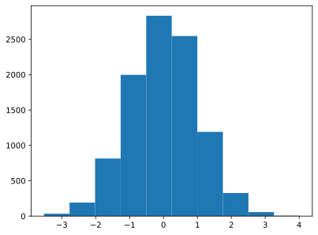
# 面向对象方式
Fig2, ax2 = plt.subplots()
ax2.hist( data )
(array([ 34., 192., 815., 1998., 2834., 2547., 1191., 327., 57.,
5.]),
array([-3.52443952, -2.7707963 , -2.01715308, -1.26350986, -0.50986665,
0.24377657, 0.99741979, 1.75106301, 2.50470622, 3.25834944,
4.01199266]),
<BarContainer object of 10 artists>)
在上述示例中，对该直方图求积分，其结果是个体的总数，即 10000。
区间个数
bins参数即区间划分的数量，默认为10，现将其改为30。
# Matlab 方式
Fig1 = plt.figure()
plt.hist( data, bins = 30 )
(array([ 13., 10., 11., 33., 60., 99., 166., 263., 386., 507., 671.,
820., 914., 946., 974., 998., 834., 715., 527., 388., 276., 163.,
110., 54., 38., 11., 8., 2., 2., 1.]),
array([-3.52443952, -3.27322511, -3.02201071, -2.7707963 , -2.51958189,
-2.26836749, -2.01715308, -1.76593868, -1.51472427, -1.26350986,
-1.01229546, -0.76108105, -0.50986665, -0.25865224, -0.00743783,
0.24377657, 0.49499098, 0.74620538, 0.99741979, 1.24863419,
1.4998486 , 1.75106301, 2.00227741, 2.25349182, 2.50470622,
2.75592063, 3.00713504, 3.25834944, 3.50956385, 3.76077825,
4.01199266]),
<BarContainer object of 30 artists>)
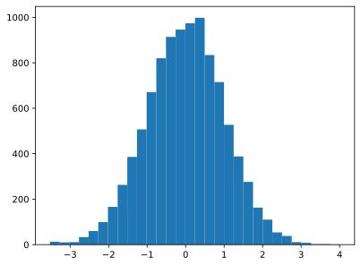
# 面向对象方式
Fig2, ax2 = plt.subplots()
ax2.hist( data, bins = 30 )
(array([ 13., 10., 11., 33., 60., 99., 166., 263., 386., 507., 671.,
820., 914., 946., 974., 998., 834., 715., 527., 388., 276., 163.,
110., 54., 38., 11., 8., 2., 2., 1.]),
array([-3.52443952, -3.27322511, -3.02201071, -2.7707963 , -2.51958189,
-2.26836749, -2.01715308, -1.76593868, -1.51472427, -1.26350986,
-1.01229546, -0.76108105, -0.50986665, -0.25865224, -0.00743783,
0.24377657, 0.49499098, 0.74620538, 0.99741979, 1.24863419,
1.4998486 , 1.75106301, 2.00227741, 2.25349182, 2.50470622,
2.75592063, 3.00713504, 3.25834944, 3.50956385, 3.76077825,
4.01199266]),
<BarContainer object of 30 artists>)
透明度
Alpha 参数表示透明度，默认为 1，现将其改为为 0.5。
# Matlab 方式
Fig1 = plt.figure()
plt.hist( data, alpha=0.5 )
(array([ 34., 192., 815., 1998., 2834., 2547., 1191., 327., 57.,
5.]),
array([-3.52443952, -2.7707963 , -2.01715308, -1.26350986, -0.50986665,
0.24377657, 0.99741979, 1.75106301, 2.50470622, 3.25834944,
4.01199266]),
<BarContainer object of 10 artists>)
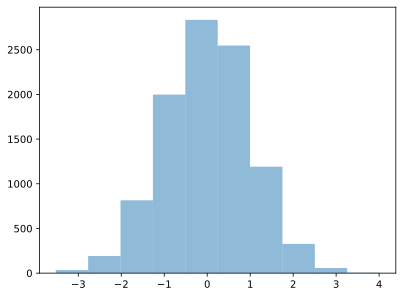
# 面向对象方式
Fig2, ax2 = plt.subplots()
ax2.hist( data, alpha=0.5 )
(array([ 34., 192., 815., 1998., 2834., 2547., 1191., 327., 57.,
5.]),
array([-3.52443952, -2.7707963 , -2.01715308, -1.26350986, -0.50986665,
0.24377657, 0.99741979, 1.75106301, 2.50470622, 3.25834944,
4.01199266]),
<BarContainer object of 10 artists>)
图表类型
histtype表示类型，默认为bar，现在将其改为stepfilled，图形浑然一体。
# Matlab 方式
Fig1 = plt.figure()
plt.hist( data, histtype='stepfilled')
(array([ 34., 192., 815., 1998., 2834., 2547., 1191., 327., 57.,
5.]),
array([-3.52443952, -2.7707963 , -2.01715308, -1.26350986, -0.50986665,
0.24377657, 0.99741979, 1.75106301, 2.50470622, 3.25834944,
4.01199266]),
[<matplotlib.patches.Polygon at 0x7b32e6413b90>])
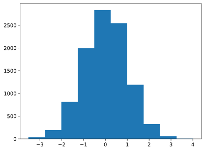
直方图颜色
color 表示直方图的颜色，这里进行更改。
# Matlab 方式
Fig1 = plt.figure()
plt.hist( data, color='#A2A2D0' )
(array([ 34., 192., 815., 1998., 2834., 2547., 1191., 327., 57.,
5.]),
array([-3.52443952, -2.7707963 , -2.01715308, -1.26350986, -0.50986665,
0.24377657, 0.99741979, 1.75106301, 2.50470622, 3.25834944,
4.01199266]),
<BarContainer object of 10 artists>)
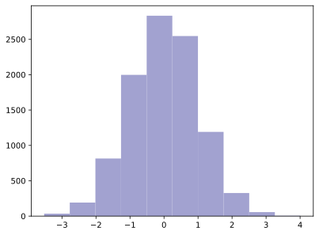
边缘颜色
edgecolor表示直方图边缘的颜色，这里改为白色。改为白色的好处是，中间的“分割线”更明显，绘图效果更佳。
# Matlab 方式
Fig1 = plt.figure()
plt.hist( data, color='#A2A2D0', edgecolor='#FFFFFF' )
(array([ 34., 192., 815., 1998., 2834., 2547., 1191., 327., 57.,
5.]),
array([-3.52443952, -2.7707963 , -2.01715308, -1.26350986, -0.50986665,
0.24377657, 0.99741979, 1.75106301, 2.50470622, 3.25834944,
4.01199266]),
<BarContainer object of 10 artists>)
综合应用
# 创建三个正态分布的样本
import numpy as np
x1 = np.random.normal( 3, 1, 1000 )
x2 = np.random.normal( 6, 1, 1000 )
x3 = np.random.normal( 9, 1, 1000 )
# Matlab 方式
Fig1 = plt.figure()
plt.hist( x1, bins=30, alpha=0.5, color='#7CB5EC', edgecolor='#FFFFFF' )
plt.hist( x2, bins=30, alpha=0.5, color='#A2A2D0', edgecolor='#FFFFFF' )
plt.hist( x3, bins=30, alpha=0.5, color='#47ADC7', edgecolor='#FFFFFF' )
(array([ 3., 1., 1., 6., 10., 16., 19., 15., 28., 40., 45., 62., 60.,
64., 77., 72., 73., 84., 58., 61., 54., 30., 35., 22., 25., 16.,
12., 3., 3., 5.]),
array([ 6.01183817, 6.20259406, 6.39334995, 6.58410584, 6.77486173,
6.96561762, 7.15637351, 7.3471294 , 7.5378853 , 7.72864119,
7.91939708, 8.11015297, 8.30090886, 8.49166475, 8.68242064,
8.87317653, 9.06393242, 9.25468831, 9.4454442 , 9.63620009,
9.82695598, 10.01771187, 10.20846776, 10.39922365, 10.58997954,
10.78073543, 10.97149132, 11.16224721, 11.3530031 , 11.54375899,
11.73451488]),
<BarContainer object of 30 artists>)
# 面向对象方式
Fig2, ax2 = plt.subplots()
ax2.hist( x1, bins=30, alpha=0.5, histtype='stepfilled', color='#7CB5EC' )
ax2.hist( x2, bins=30, alpha=0.5, histtype='stepfilled', color='#A2A2D0' )
ax2.hist( x3, bins=30, alpha=0.5, histtype='stepfilled', color='#47ADC7' )
(array([ 3., 1., 1., 6., 10., 16., 19., 15., 28., 40., 45., 62., 60.,
64., 77., 72., 73., 84., 58., 61., 54., 30., 35., 22., 25., 16.,
12., 3., 3., 5.]),
array([ 6.01183817, 6.20259406, 6.39334995, 6.58410584, 6.77486173,
6.96561762, 7.15637351, 7.3471294 , 7.5378853 , 7.72864119,
7.91939708, 8.11015297, 8.30090886, 8.49166475, 8.68242064,
8.87317653, 9.06393242, 9.25468831, 9.4454442 , 9.63620009,
9.82695598, 10.01771187, 10.20846776, 10.39922365, 10.58997954,
10.78073543, 10.97149132, 11.16224721, 11.3530031 , 11.54375899,
11.73451488]),
[<matplotlib.patches.Polygon at 0x7b32e59c0230>])
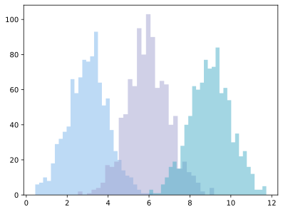
图窗属性
坐标轴上下限
尽管Matplotlib会自动调整图窗为最佳的坐标轴上下限，但很多时候仍然需要手动设置，才能适应当时的情况。
import matplotlib.pyplot as plt
%matplotlib inline
# 展示高清图
from matplotlib_inline import backend_inline
backend_inline.set_matplotlib_formats('svg')
# 准备数据
x = [ 1, 2, 3, 4, 5 ] # 数据的 x 值
y = [ 1, 8, 27, 64, 125 ] # 数据的 y 值
现在设置其坐标轴上下限，有两种方法：lim法与axis法。
lim法
使用lim法时，Matlab方法与面向对象方法首次出现区别。
# Matlab 方式（lim 法）
Fig1 = plt.figure()
plt.plot(x,y)
plt.xlim(1,5)
plt.ylim(1,125)
(1.0, 125.0)
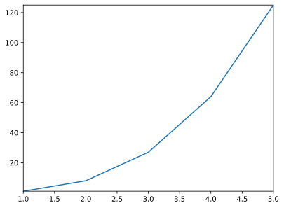
# 面向对象方式（lim 法）
Fig2, ax2 = plt.subplots()
ax2.plot(x,y)
ax2.set_xlim(1,5)
ax2.set_ylim(1,125)
(1.0, 125.0)
axis法
# Matlab 方式（axis 法）
Fig5 = plt.figure()
plt.plot(x,y)
plt.axis([1, 5, 1, 125])
(np.float64(1.0), np.float64(5.0), np.float64(1.0), np.float64(125.0))
# 面向对象方式（axis 法）
Fig6, ax6 = plt.subplots()
ax6.plot(x,y)
ax6.axis([1, 5, 1, 125])
(np.float64(1.0), np.float64(5.0), np.float64(1.0), np.float64(125.0))
标题与轴名称
在这里，Matlab方式与面向对象方法将最后一次出现区别。
# Matlab 方式
Fig1 = plt.figure()
plt.plot(x,y)
plt.title('This is the title.')
plt.xlabel('This is the xlabel')
plt.ylabel('This is the ylabel')
Text(0, 0.5, 'This is the ylabel')
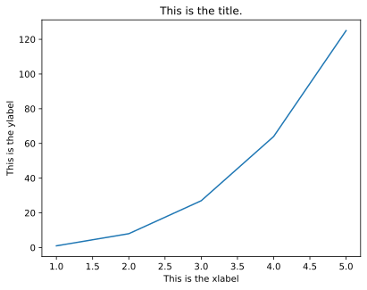
# 面向对象方式
Fig2, ax2 = plt.subplots()
ax2.plot(x,y)
ax2.set_title('This is the title.')
ax2.set_xlabel('This is the xlabel')
ax2.set_ylabel('This is the ylabel')
Text(0, 0.5, 'This is the ylabel')
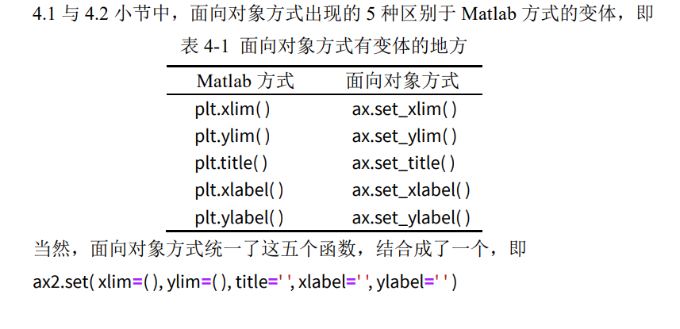
# 面向对象方式
Fig2, ax2 = plt.subplots()
ax2.plot(x,y)
ax2.set( xlim=(1, 5) , ylim=(1, 125), title='This is the title', xlabel='This is the xlabel', ylabel='This is the ylabel' )
[(1.0, 5.0),
(1.0, 125.0),
Text(0.5, 1.0, 'This is the title'),
Text(0.5, 0, 'This is the xlabel'),
Text(0, 0.5, 'This is the ylabel')]
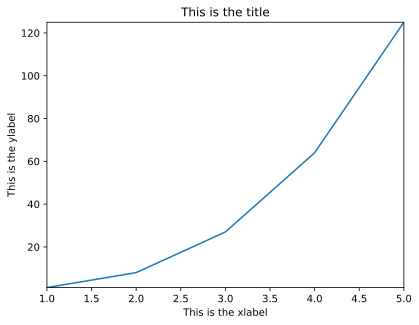
图例
一般图例会出现在二维图与统计图中，网格图则用的是颜色条。
import matplotlib.pyplot as plt
%matplotlib inline
# 展示高清图
from matplotlib_inline import backend_inline
backend_inline.set_matplotlib_formats('svg')
# 准备数据
x = [ 1, 2, 3, 4, 5 ] # 数据的 x 值
y1 = [ 1, 2, 3, 4, 5 ] # 数据的 y1 值
y2 = [ 0, 0, 0, 0, 0 ] # 数据的 y2 值
y3 = [ -1, -2, -3, -4, -5 ] # 数据的 y3 值
# Matlab 方式
Fig1 = plt.figure()
plt.plot(x, y1, label='y=x')
plt.plot(x, y2, label='y=0')
plt.plot(x, y3, label='y=-x')
plt.legend()
<matplotlib.legend.Legend at 0x78910447bb90>
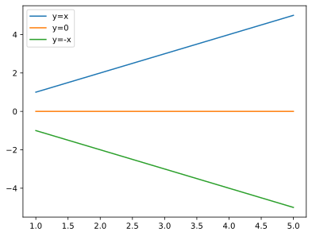
# 面向对象方式
Fig2, ax2 = plt.subplots()
ax2.plot(x ,y1, label='y=x')
ax2.plot(x ,y2, label='y=0')
ax2.plot(x ,y3, label='y=-x')
ax2.legend()
<matplotlib.legend.Legend at 0x789103cf9970>
如果你不想展示某些线条的图例，只需去除该函数中的label关键字即可。
网格
给图形加上网格，美观又好看，多是一件美事啊。
# Matlab 方式
Fig1 = plt.figure()
plt.plot(x, y1)
plt.plot(x, y2)
plt.plot(x, y3)
plt.grid()
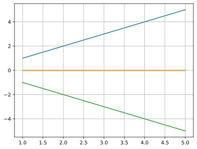
# 面向对象方式
Fig2, ax2 = plt.subplots()
ax2.plot(x, y1)
ax2.plot(x, y2)
ax2.plot(x, y3)
ax2.grid()
当然，grid()函数还有 color 与 linestyle 两个参数，这与 plot 里用法一致。
# Matlab 方式
Fig1 = plt.figure()
plt.plot(x, y1)
plt.plot(x, y2)
plt.plot(x, y3)
plt.grid(color='#000000',linestyle='--')
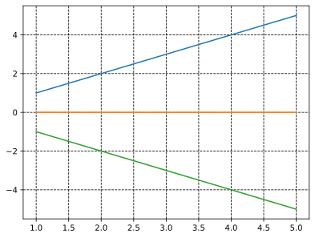